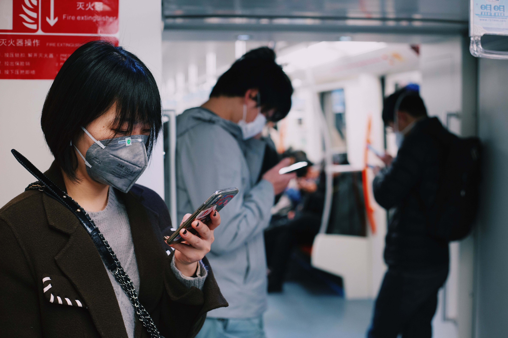

COVID TRAVEL GUIDELINES
Although travelling is something we all love to do, with the current global Covid-19 pandemic the way we travel has changed drastically. At least for the time being, the rules for international travel are being shaped by Covid-19 health and safety regulation as countries scramble to get the virus under control. It is important to stay informed on both health and safety precautions as well as country specific guidelines for travel.

Health and Safety:
The United States' Center for Disease Control and Prevention recommends that you
- Always wear a mask covering the mouth and nose.
- Stay 6 Feet Apart.
- Avoids Crowds
- Wash your hands often.
- Get tested 1 to 3 days prior to travel
- Look up country specific travel restrictions
- Carry extra supply of mask and sanitzer
- Avoid touching eyes, nose, and mouth.

The CDC also recommends that you are Covid vaccinated to ideally lower your chances of infection. However, a two-week grace period must be given to traveling after your second dose of the vaccine to ensure your immunity has been built. It is important to note that the vaccine doesn’t stop you for being able to carry the disease so precautions as well as testing after travel should be taken.
Some good sources for travel restriction information if you’re traveling from the state are:
- https://www.cdc.gov/coronavirus/2019-ncov/travelers/travel-planner/index.html
- https://www.who.int/emergencies/diseases/novel-coronavirus-2019/travel-advice
- https://travel.state.gov/content/travel/en/traveladvisories/ea/covid-19-information.html
These government websites, as well as your airline provider, should provide you with all the necessary information for your trip. The Travel Planner in particular is a great tool for organizing out all necessary parts of your trip and getting your questions answered. Make sure to ask and log this information since it can be critical to your trip. In many cases not having the correct paperwork or forms completed can result in delayed trips at the expense of the traveler.